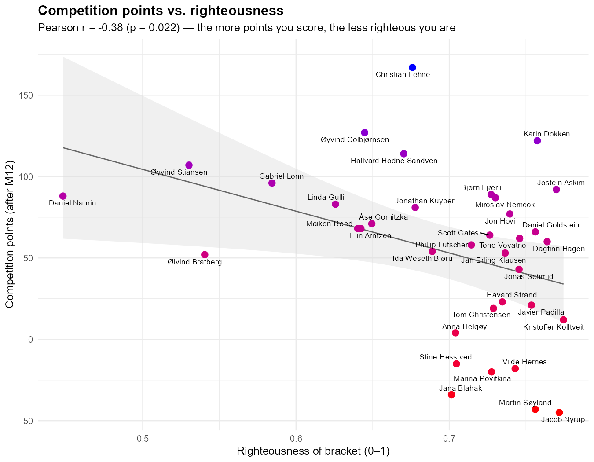

There are whispers in the hallways at the department that being good at predicting scores in the World Cup competition is a sign of deep football knowledge, intelligence, and wisdom. That might be the case, but in this post, I will outline a less explored issue in sports gambling: the relationship between morals and precision in sports predictions. By applying a theory of unrighteous accuracy to the ISV World Cup 2026 competition, I will show how scoring quantitative prediction points might be impressive on the surface, but there is a deeply concerning patterns about attitudes at the Department of Political Science. Operationalized though a set of normatively wanted features, I show that a uniquely developed index of RIGHTEOUSNESS is negatively and significantly correlated with higher scores in the world cup competition. This has large ramifications for any literature.
A theory of unrighteous accuracy
Why should scoring points make us less righteous? The relationship is not paradoxical but methodological. A competition rewarding accuracy, and accurate forecasting, as Tetlock (2005) demonstrates, requires the systematic suppression of wishful and moralized cognition: the tipsters who score do so precisely because they decline to let their values shape their brackets. This is realism in the classical sense (Morgenthau 1948). Like the statesman, the forecaster predicts the distribution of power rather than the deserving. The strong do what they can while the weak suffer what they must (Thucydides 1972). Moreover, the fact that power and righteousness should diverge in football is no accident: authoritarian regimes increasingly purchase sporting prominence as soft power (Brannagan and Giulianotti 2015; Grix and Lee 2013), so to back the likely winner is, more often than not, to back the unrighteous. Consequently, last place is not incompetence but conviction. An ethic of conviction in Weber’s (1946) sense, which accepts the worldly cost of refusing to forecast against one’s principles. I thus hypothesize that
\(H_1\): Righteous predictions cause lower World Cup 2026 ISV competition scores
Data and variables
I use the original data from the official competition github repository,4, data from the Varieties of Democracy project,5, and manual coding.6 The index of righteousness consist of four components:
- v2x_polyarchy: Electoral Democracy Index (used as the democracy dimension)
- v2x_clphy: Physical Violence Index, i.e. freedom from political killing and torture (used as the human rights dimension)
- v2x_corr: Political Corruption Index, entered inverted as 1 − v2x_corr (used as the cleanness dimension)
- Manual adjustments, detailed in the appendix
Analysis
As shown in Figure 1, there is a significant7 negative relationship between scoring well in the competition and having righteous predictions.
Discussion
We can now return to the whispers in the hallways. Skill at predicting World Cup scores is not so much a sign of wisdom as incomplete reporting of the moral price at which accuracy is bought. Across the 36 contestants at the Department of Political Science, righteousness and competitive success move significantly in opposite directions: the leaderboard is best understood as an inverted moral hierarchy, not a ranking of expertise. The implications for any literature are large, and the remedy is simple. Where the quantitative competition rewards the prediction of suffering, the RIGHTEOUSNESS index rewards the refusal to engage in it. But, I will concede this post was born out of shame and embarrassment over my own predictions, and I might have tweaked a bit with the data, but the point still stands. In this competition, as in politics, virtue and victory are not merely uncorrelated, but opposed. I therefore remain, gladly, in last place.
Appendix
Original index construction
| Rule | Applies to | Weight / adjustment | Notes |
|---|---|---|---|
| Democracy | every nation | v2x_polyarchy |
V-Dem electoral democracy index (0–1), 2025 |
| Human rights | every nation | v2x_clphy |
V-Dem physical-violence index (freedom from torture/killing) |
| Cleanness | every nation | 1 − v2x_corr |
inverted V-Dem political-corruption index |
| Country righteousness | every nation | mean of the three above | the honest base score, kept as righteousness_vdem |
| Bracket weight — Round of 32 | each team a contestant advances | ×1 | deepest round reached sets the weight |
| Bracket weight — Round of 16 | ” | ×2 | |
| Bracket weight — Quarter-final | ” | ×3 | |
| Bracket weight — Semi-final | ” | ×4 | |
| Bracket weight — Final | ” | ×5 | both finalists |
| Bracket weight — World champion | ” | ×6 | champion override |
| Contestant righteousness | each contestant | weight-weighted mean of their teams’ righteousness | the base before taxes (righteousness_bracket) |
Manual corrections made to the index
| Rule | Applies to | Weight / adjustment | Notes |
|---|---|---|---|
| 🇸🇪 Rivalry penalty | Sweden (country) | −0.68 | drops Sweden from 1st to 43rd of 46 |
| 🇳🇴 Norway bonus | Norway (country) | +0.05 | gratuitous |
Timesheet levy (overskudd_paa_timeregnskapet) |
Øyvind Stiansen | −0.10 | personal |
| Theorist tax | Sandven, Bratberg, Kuyper | −0.05 each | defined as ½ the timesheet levy |
| Swede surtax | Daniel Naurin, Gabriel Lönn | −0.15 each | Sweden’s disgrace, amplified for nationals |
| Taking-it-too-seriously tax | every contestant | −0.004814 per survey-minute, capped at −0.15 | rate tuned by uniroot() to p = 0.050 |
| Abstention tax | anyone with no qualitative submission (Colbjørnsen) | −0.15 | = the seriousness cap; punishes non-participation |
References
Brannagan, Paul Michael, and Richard Giulianotti. 2015. “Soft Power and Soft Disempowerment: Qatar, Global Sport and Football’s 2022 World Cup Finals.” Leisure Studies 34 (6): 703–19.
Grix, Jonathan, and Donna Lee. 2013. “Soft Power, Sports Mega-Events and Emerging States: The Lure of the Politics of Attraction.” Global Society 27 (4): 521–36.
Morgenthau, Hans J. 1948. Politics Among Nations: The Struggle for Power and Peace. Alfred A. Knopf.
Tetlock, Philip E. 2005. Expert Political Judgment: How Good Is It? How Can We Know? Princeton University Press.
Thucydides. 1972. History of the Peloponnesian War. Translated by Rex Warner. Penguin.
Weber, Max. 1946. “Politics as a Vocation.” In From Max Weber: Essays in Sociology, edited by H. H. Gerth and C. Wright Mills. Oxford University Press.
Footnotes
The author has shamelessly used Claude Opus 4.8 to produce the code and come up with the literature for this project↩︎
The author has shamelessly used Claude Opus 4.8 to produce the code and come up with the literature for this project↩︎
The author has shamelessly used Claude Opus 4.8 to produce the code and come up with the literature for this project↩︎
https://github.com/haavas/VM2026↩︎
https://github.com/vdeminstitute/vdemdata↩︎
See appendix.↩︎
I used
uniroot()on the time used to complete the qualitative study to ensure the correlation is significant at the \(0.050\) level.↩︎